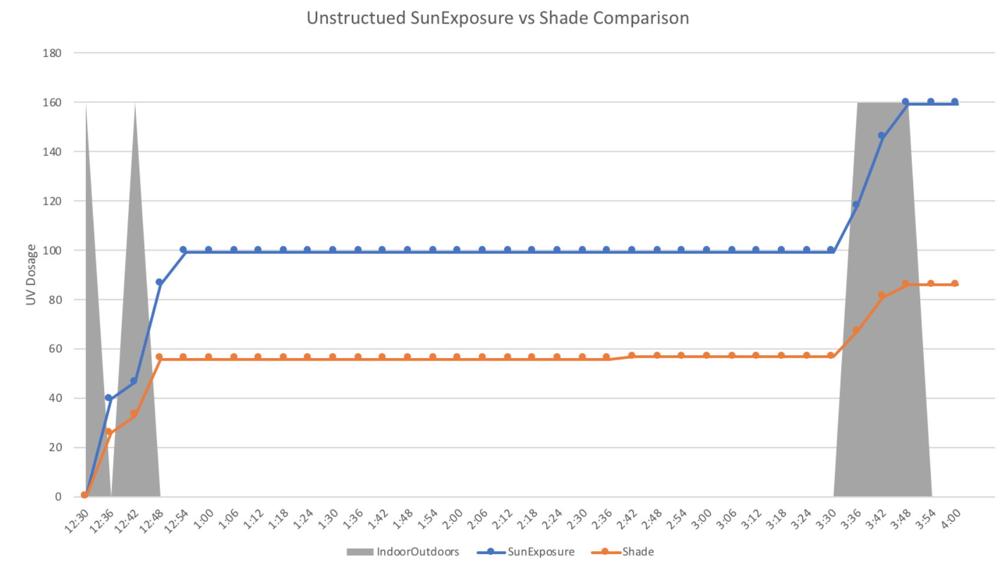

Unstructured Walkthrough
The graph showing the results of the unstructured walkthrough are below. In the unstructured walkthrough, a participant wore the Shade sensor and used the SunExposure app for an afternoon. The participant went about their day as normal, but noted the
times they were indoors and outdoors (in gray). The results show a F-score of 0.985 for indoor and outdoor detection and a Pearson Correlation Coefficient of 0.994 between the Shade sensor and SunExposure accumulated UV dosage values. However,
we again note the overestimation of SunExposure and the underestimation of Shade.

Next Steps and Future Work
Based on our work, we propose the following next steps:
- Additional unstructured walkthroughs in varying weather conditions and different locations
- Evaluating different UV Index APIs, even though they may be limited in terms of the precision or update period
- Comparison to other physical UV sensors, such as the one developed by Professor John Rogers
- Additional testing of the SunExposure app questionnaire, focussing on varying time intervals and overall timespan
.